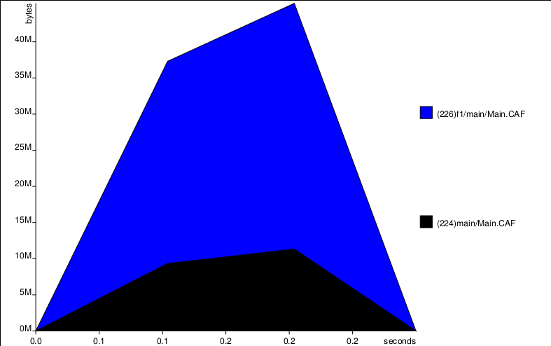
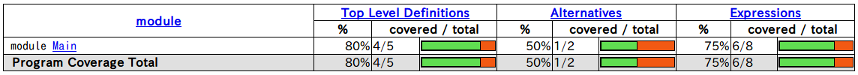

Link to
hereはじめに
Haskell用コンパイラであるGHCは、驚くほど多彩な情報出力機能を標準で搭載しています。
出力できる情報は非常に沢山ありますが、ここでは、以下のいくつかの方法について簡単にまとめて紹介します。
なお、本記事では、stackコマンド経由ではなく、素のGHCを使う場合について説明しています。 stackコマンドを使用する場合は、ghcコマンドではなく、stack ghc --コマンドの様に読み替えてください。
また、本記事の実行例は、GHC8.2.1とLinux(ubuntu 16.04 LTS)環境によるものです。
Link to
here1. ghciでの対話操作による情報の出力方法
ここでは、GHCの対話環境（REPL）であるghciコマンドを用いた、情報の出力方法について紹介します。
- 型(type)の情報の出力（
:tコマンド） - 型(type)の情報の入門者向けの出力（
:t +dコマンド） - 型(type)の情報の詳細出力（
:t +vコマンド） - 種(kind)の情報の出力（
:kコマンド） - 名前の内容についての情報の出力（
:iコマンド） - その他いろいろなコマンド
以下、各々の例について説明します。
Link to
here型(type)の情報の出力（:tコマンド）
GHCの対話環境であるghci上で、:tコマンド（または省略しない形の:typeコマンド）を実行することにより、変数や関数などについての型の情報を表示できます。
以下は、:t lengthコマンドの実行例です。
ghciコマンドを起動してから、:t lengthコマンドを実行すると、
次の様に出力されます。
上の例では、「length関数は、t a型の値を入力して、Int型の値を返す関数である」ことを示しています。 また、「型変数tはFoldableクラスに属する」ことを示しています。
Link to
here型(type)の情報の入門者向けの出力（:t +dコマンド）
GHC8.2で導入された新しい機能です。
:t +dコマンド（または省略しない形の:type +dコマンド）を実行することにより、デフォルトの型を考慮して、型の情報を分かりやすく出力できます。
:t +d lengthコマンドを実行すると、
次の様に出力されます。
上の例では、+dオプションをつけない:typeコマンドと比べると、Foldable t => t aの部分がリスト型として具体化されて出力されています。
Link to
here型(type)の情報の詳細出力（:t +vコマンド）
GHC8.2で導入された新しい機能です。
:t +vコマンド（または省略しない形の:type +vコマンド）を実行することにより、型についての情報をより詳しく出力できます。
:t +v lengthコマンドを実行すると、
次の様に出力されます。
上の例では、+vオプションをつけない:typeコマンドと比べると、forall a.の部分が詳しく出力されています。
Link to
here種(kind)の情報の出力（:kコマンド）
:kコマンド（または省略しない形の:kindコマンド）を実行することにより、種（カインド）についての情報を出力できます。
:k Maybeコマンドを実行すると、
次の様に出力されます。
上の例では、Maybe型は、*の種を入力し、*の種を返す型であることを出力します。
Link to
here名前の内容についての情報の出力（:iコマンド）
:iコマンド（または省略しない形の:infoコマンド）を実行することにより、その名前の定義情報などを出力できます。
:i lengthコマンドを実行すると、
次の様に出力されます。
上の例では、lengthの定義内容（関数であり、Foldableクラスに属しており、Data.Foldableモジュール内で定義されていること）が出力されています。
Link to
hereその他、ghciのいろいろなコマンド
他にもghciのコマンドにより、様々な情報を対話的に出力させることが出来ます。
:show imports: importしているモジュールの一覧出力:help: コマンドのヘルプ
ghciのコマンドの詳細は、こちらを参照してください。
ghciのコマンドや、型や種(カインド)については、こちらやこちらも参考になります。
Link to
here2. コンパイル時における情報の出力方法
ここでは、GHCのコンパイル時における、情報の出力方法について紹介します。
- コンパイル時の各ステージごとの中間コードの出力
- 型情報の出力
- 正格性情報の出力
以下、各々の例について説明します。
Link to
hereコンパイル時の各ステージごとの中間コードの出力
GHCは、コンパイル時に、中間言語変換などの複数のパイプラインステージを経ながら、最終的にアセンブリコードを生成します。
コンパイル時に情報出力用のオプションを指定することにより、それらの各ステージごとの中間コードを出力できます。
例えば、以下の単純なソースの場合について例を示します。
以下、GHCのコンパイル・パイプラインにおける、パーサーやリネームなどの各ステージ後のコード出力例を示します。
Link to
hereパーサー後
GHCのコンパイルにおける、パーサーのステージ直後のコードを出力するには、-ddump-parsedオプションを指定します。
$ ghc -ddump-parsed Func1.hs パーサー後のコードが、以下の様に出力されます。
[1 of 1] Compiling Func1 ( Func1.hs, Func1.o ) [flags changed]
==================== Parser ====================
module Func1 where
f1 :: Int -> Int -> Int
f1 x y = x + y上の例では、元のソースと同じコードが表示されました。
Link to
hereリネーム後
以下は、リネームのステージ直後のコードを出力する、-ddump-rnオプションの例です。
$ ghc -fforce-recomp -ddump-rn Func1.hs 以下の様に出力されます。
[1 of 1] Compiling Func1 ( Func1.hs, Func1.o )
==================== Renamer ====================
Func1.f1 :: Int -> Int -> Int
Func1.f1 x_aRf y_aRg = x_aRf + y_aRg上の例では、ユニークな識別子に変換されたコードが出力されています。
なお、上の例では、ソースファイルの最終更新時刻が、オブジェクトファイルよりも古い場合でも強制的に再コンパイルさせる-fforce-recompを指定しています。
以下、いくつかのステージ後の中間コードの出力例を、続けて示します。
Link to
here脱糖(Desugar)後の、Core言語コード
$ ghc -O -fforce-recomp -ddump-ds Func1.hs :
f1 :: Int -> Int -> Int
[LclIdX]
f1
= \ (x_aSt :: Int) (y_aSu :: Int) ->
+ @ Int GHC.Num.$fNumInt x_aSt y_aSu
:上の例では、Haskell言語の構文から、GHCの内部表現の１つであるCore言語に変換されたコードが出力されています。
Core言語は、非常にシンプルな要素で構成された関数型言語です。
Link to
hereSTG中間言語での最適化最終コード
$ ghc -O -fforce-recomp -ddump-stg Func1.hs :
Func1.f1 :: GHC.Types.Int -> GHC.Types.Int -> GHC.Types.Int
[GblId,
Arity=2,
Caf=NoCafRefs,
Str=<S(S),1*U(U)><S(S),1*U(U)>m,
Unf=OtherCon []] =
\r [eta_B2 eta_B1] GHC.Num.$fNumInt_$c+ eta_B2 eta_B1;
:上の例では、さらに、GHCの内部表現の１つであるSTG言語に変換されたコードが出力されています。
STG言語は、非常にシンプルな要素で構成された、GHCの動作モデルと結びついた関数型言語です。
Link to
hereCmm中間言語での最適化最終コード
$ ghc -O -fforce-recomp -ddump-opt-cmm Func1.hs :
Func1.f1_entry() // [R3, R2]
{ [(c15y,
Func1.f1_info:
const 8589934607;
const 0;
const 14;)]
}
{offset
c15y: // global
// nop
// nop
call GHC.Num.$fNumInt_$c+_info(R3, R2) args: 8, res: 0, upd: 8;
}
}
:上の例では、さらに、GHCの内部表現の１つであるCmm言語に変換されたコードが出力されています。
Cmm(C minus minus)言語は、C言語とアセンブリ言語の中間的な位置づけの、手続き型言語です。
Link to
here最終アセンブリ命令列
$ ghc -O -fforce-recomp -ddump-asm Func1.hs :
.globl Func1.f1_info
.type Func1.f1_info, @object
Func1.f1_info:
_c15y:
jmp GHC.Num.$fNumInt_$c+_info
:上の例では、最終的なターゲットCPU用のアセンブリ言語の命令コードが出力されています。
詳細は省略しますが、他にも様々なステージの情報を出力させることが出来ます。
-ddump-simpl: Core中間言語での最適化中コード-ddump-prep: Core中間言語での最適化最終コード-ddump-cmm: Cmm中間言語での最適化中コード-ddump-llvm: LLVM版の命令列- その他
中間コードの出力方法の詳細は、こちらを参照してください。
中間言語については、こちらも参考になります。
Link to
here型情報の出力
コンパイル時に得られる型情報を出力することが出来ます。
例えば、以下の単純なソースの場合について例を示します。
コンパイル時に得られる型情報を出力するには、-ddump-typesオプションを指定します。
$ ghc -ddump-types Func2.hs以下の様に出力されます。
[1 of 1] Compiling Func2 ( Func2.hs, Func2.o )
TYPE SIGNATURES
f2 :: Count -> Count -> Count
TYPE CONSTRUCTORS
type Count = Int
COERCION AXIOMS
Dependent modules: []
Dependent packages: [base-4.10.0.0, ghc-prim-0.5.1.0,
integer-gmp-1.0.1.0]それぞれの型の情報が出力されています。
Link to
here正格性情報の出力
コンパイル時に得られる正格性についての情報を出力することが出来ます。
例えば、以下の単純なソースの場合について例を示します。
少し恣意的な例ですが、関数f3の第１引数は正格（かつ関数内で使用されている）、第2引数は非正格（かつ関数内で使用されている）、第3引数は非正格（かつ関数内で使用されていない）という場合の例です。
コンパイル時に得られる、関数の各引数についての正格性の情報を出力するには、-ddump-str-signaturesオプションを指定します。 なお、正格性についての最適化を行うために、-Oオプションも併せて指定します。
$ ghc -O -ddump-str-signatures Func3.hs正格性についての情報が、以下の様に出力されます。
[1 of 1] Compiling Func3 ( Func3.hs, Func3.o )
==================== Strictness signatures ====================
Func3.$trModule: m
Func3.f3: <S(S),1*U(1*U)><L,1*U(U)><L,A>m
==================== Strictness signatures ====================
Func3.$trModule: m
Func3.f3: <S(S),1*U(1*U)><L,1*U(U)><L,A>m上の例によると、第１引数は、<S(S),1*U(1*U)>の部分により表されています。 ここでのS(S)は、引数が正格(Strict)であることを示しています。 1*U(1*U)は、引数が関数内で使用(Use)されていることを示しています。
第2引数は、<L,1*U(U)>の部分により表されています。 Lは引数が非正格（non-strict）であることを示しています。 1*U(U)は、引数が関数内で使用(Use)されていることを示しています。
第3引数は、<L,A>の部分により表されています。 Lは引数が非正格（non-strict）であることを示しています。 Aは、引数が関数内で不使用（Absence）であることを示しています。
正格性解析については、こちらも参考になります。
Link to
hereその他、コンパイル時のいろいろなオプション
他にも、コンパイル時に様々な情報を出力させることが出来ます。
コンパイル時のオプションの詳細は、こちらを参照してください。
Link to
here3. 実行オブジェクトの実行時における情報の出力方法
ここでは、GHCによりコンパイルされた実行オブジェクトについて、実行時に情報を出力する方法を紹介します。
- 実行時の統計情報の出力
- 時間プロファイルの出力
- 空間プロファイルの出力
- 実行時イベントの出力
- コードカバレッジの出力
- スタックトレースの出力
以下、各々の例について説明します。
Link to
here実行時の統計情報の出力
GHCによりコンパイルされた実行オブジェクトについて、実行時の統計情報を出力できます。
例えば、以下のソースの場合について例を示します。
まずは、普通にコンパイルを行います。
ここでは、通常の例を示すために、標準的な最適化を行う-Oオプションを指定しています（プロファイル取得に必須ではありません。）
$ ghc -O Prog1.hs 実行時の統計情報を出力するには、以下の様に、実行オブジェクトの起動時に+RTS -sオプションを指定します。 （+RTS以降の引数が、GHCのランタイムシステム(RTS)に引き渡されます。 ここでは、-sが統計情報出力のためのオプションです。）
$ ./Prog1 +RTS -s以下の様に、実行時の統計情報が出力されます。
50000005000000
320,051,552 bytes allocated in the heap
23,320 bytes copied during GC
44,504 bytes maximum residency (2 sample(s))
29,224 bytes maximum slop
2 MB total memory in use (0 MB lost due to fragmentation)
Tot time (elapsed) Avg pause Max pause
Gen 0 304 colls, 0 par 0.004s 0.004s 0.0000s 0.0002s
Gen 1 2 colls, 0 par 0.000s 0.000s 0.0000s 0.0000s
INIT time 0.000s ( 0.000s elapsed)
MUT time 0.532s ( 0.549s elapsed)
GC time 0.004s ( 0.004s elapsed)
EXIT time 0.000s ( 0.000s elapsed)
Total time 0.536s ( 0.553s elapsed)
%GC time 0.7% (0.7% elapsed)
Alloc rate 601,600,661 bytes per MUT second
Productivity 99.3% of total user, 99.3% of total elapsed上の例では、全体の実行時間やヒープの割当量やGCの概況等が出力されています。
表示内容の詳細については、こちらを参照してください。
Link to
here時間プロファイルの出力
GHCによりコンパイルされた実行オブジェクトについて、実行時の時間プロファイル情報を出力できます。
例えば、以下のソースの場合について例を示します。
$ cat Prog2.hs
module Main where
main :: IO ()
main = print f1
f1 :: Int
f1 = sum [1..10000000] + f2
f2 :: Int
f2 = sum [1..10000000]プロファイルを取るためには、以下の様にまず、コンパイル時に、-rtsopts -prof -fprof-autoオプションを指定します。
-rtsoptsは、実行オブジェクトの実行時に、GHCのランタイムシステム(RTS)用の引数を使用可能にするオプションです。 -profは、プロファイル用のコードを埋め込むためのオプションです。 -fprof-autoは、プロファイルを取得する対象を自動で設定するオプションです。
$ ghc -O -rtsopts -prof -fprof-auto Prog2.hs実行時の時間プロファイルを出力するには、実行オブジェクトの起動時に+RTS -pオプションを指定します。 （-pが時間プロファイル情報出力のためのオプションです。）
$ ./Prog2 +RTS -pこれにより、時間プロファイル情報が、Prog2.profファイルに以下の様に出力されます。
$ cat Prog2.prof
Sun Sep 3 18:01 2017 Time and Allocation Profiling Report (Final)
Prog2 +RTS -p -RTS
total time = 0.03 secs (25 ticks @ 1000 us, 1 processor)
total alloc = 49,688 bytes (excludes profiling overheads)
COST CENTRE MODULE SRC %time %alloc
f2 Main Prog2.hs:11:1-22 60.0 0.0
f1 Main Prog2.hs:8:1-27 40.0 0.1
MAIN MAIN <built-in> 0.0 1.3
CAF GHC.IO.Handle.FD <entire-module> 0.0 69.8
CAF GHC.IO.Encoding <entire-module> 0.0 5.6
CAF GHC.Conc.Signal <entire-module> 0.0 1.3
main Main Prog2.hs:5:1-15 0.0 21.3
:上の例では、mainやf1やf2などについて、関数ごとの実行時間が出力されています。
時間プロファイルの表示内容の詳細については、こちらを参照してください。
時間プロファイルについては、こちらや、こちらも参考になります。
Link to
here空間プロファイルの出力
GHCによりコンパイルされた実行オブジェクトについて、実行時の空間プロファイル情報、つまり、ヒープメモリの使用状況等を出力できます。
例えば、以下のソースの場合について例を示します。
$ cat Prog3.hs
module Main where
main :: IO ()
main = print $ f1 [1..1000000]
f1 [] = 0
f1 (x:xs) = (abs x) + (f1 xs)プロファイルを取るためには、以下の様にまず、コンパイル時に、-rtsopts -prof -fprof-autoオプションを指定します。
-rtsoptsは、実行オブジェクトの実行時に、GHCのランタイムシステム(RTS)用の引数を使用可能にするオプションです。 -profは、プロファイル用のコードを埋め込むためのオプションです。 -fprof-autoは、プロファイルを取得する対象を自動で設定するオプションです。
ここでは、メモリ使用状況を分かりやすくするために、最適化のレベルを下げる-O0オプションを指定しています（プロファイル取得に必須ではありません）。
$ ghc -O0 -rtsopts -prof -fprof-auto Prog3.hs実行時の空間プロファイルを出力するには、実行オブジェクトの起動時に+RTS -hcオプションを指定します。 （-hcが時間プロファイル情報出力のためのオプションです。）
$ ./Prog3 +RTS -hc -i0.1これにより、プロファイル情報が、Prog3.hpファイルに生成されます。
なお、上の例では、-iオプションにより、プロファイルを取得する間隔を秒単位で指定しています。この例では、0.1秒単位にプロファイル情報を取得しています。秒数は、状況に併せて調整してください。
さらに、以下の様に、GHCに標準で付属しているhp2psコマンドを実行することにより、生成されたプロファイル情報を、、PostScriptファイルに変換できます。
$ hp2ps -e8in -c Prog3.hpさらに、OSプラットフォームに応じたコマンドなどにより、PostScriptファイルをPDFに変換します。 ここでは、ps2pdfコマンドを使用しています。
$ ps2pdf Prog3.ps > Prog3.pdfこれにより、以下の様に、空間プロファイルがグラフィカルに表示されます。

空間プロファイルの表示内容の詳細については、こちらを参照してください。
空間プロファイルについては、こちらや、こちらも参考になります。
Link to
here実行時イベントの出力
GHCによりコンパイルされた実行オブジェクトについて、実行時のイベント情報を出力できます。
実行時のイベントとは、GHCのランタイムシステム（RTS）におけるスレッドスケジューラやGCなどの動作情報や、ユーザー指定による動作情報です。
例えば、以下のソースの場合について例を示します。
$ cat Prog4.hs
module Main where
import Control.Concurrent (forkIO, threadDelay, myThreadId)
main :: IO ()
main = do
forkIO sub
forkIO sub
threadDelay (2 * 1000 * 1000)
sub :: IO ()
sub = do
myThreadId >>= print
print $ sum [1..100000]実行時イベントを出力するためには、以下の様にまず、コンパイル時に、-rtsopts -eventlogオプションを指定します。-eventlogが、イベントログを出力するためのオプションです。
$ ghc -O -rtsopts -eventlog Prog4.hsさらに、実際に実行時イベントを出力するには、実行オブジェクトの起動時に+RTS -lオプションを指定します。 （-lが実行時イベントを出力するためのオプションです。）
$ ./Prog4 +RTS -lこれにより、実行時のイベント情報が、Prog4.eventlogファイルにバイナリ形式で出力されます。
バイナリ形式の出力を表示するには２種類の方法があります。 ThreadscopeコマンドによりGUIで表示する方法と、ghc-eventsコマンドによりテキスト形式で表示する方法です。 どちらも、コマンドを別途インストールする必要があります。
Link to
hereThreadScopeによるGUI表示
以下は、１つめの方法であるThreadScopeを用いた表示例です。
まず、こちらからthreadscopeのバイナリを入手するか、以下の方法により、threadscopeコマンドをインストールしてください。
$ stack install threadScopeそして、以下のコマンドによりThreadscopeを起動します。
$ threadscope Prog4.eventlog以下の様にGUIが起動し、スレッドの稼動状態やGCの状態を可視化できます。

上の例では、緑の部分がスレッドの稼働中、橙の部分がGCの稼働中を表しています。 また、同時に１つスレッドのみが稼働していることが分かります（物理CPUが１個に制限されたハードウェアでの実行例です。）
Link to
hereghc-eventsによるテキスト表示
以下は、２つめの方法であるghc-eventsを用いた表示例です。
まず、以下の方法により、ghc-eventsコマンドをインストールしてください。
$ stack install ghc-eventsそして、以下のコマンドにより、イベントの内容をテキスト形式で表示できます。
$ ghc-events show Prog4.eventlog以下の様に、テキスト形式でイベント状況が詳細に表示されます。
Event Types:
0: Create thread (size 4)
1: Run thread (size 4)
2: Stop thread (size 10)
3: Thread runnable (size 4)
4: Migrate thread (size 6)
8: Wakeup thread (size 6)
9: Starting GC (size 0)
:
Events:
132911: created capset 0 of type CapsetOsProcess
134098: created capset 1 of type CapsetClockDomain
135704: created cap 0
136473: assigned cap 0 to capset 0
137241: assigned cap 0 to capset 1
141152: capset 1: wall clock time 1504529318s 220117000ns (unix epoch)
142339: capset 0: pid 4626
144644: capset 0: parent pid 3460
:
250875: cap 0: creating thread 1
253948: cap 0: running thread 1
276507: cap 0: creating thread 2
277764: cap 0: creating thread 3
281117: cap 0: stopping thread 1 (blocked on threadDelay)
286774: cap 0: running thread 2
334686: cap 0: stopping thread 2 (thread yielding)
337829: cap 0: running thread 3
341321: cap 0: stopping thread 3 (blocked on an MVar)
343975: cap 0: running thread 2
349563: cap 0: waking up thread 3 on cap 0
3108630: cap 0: stopping thread 2 (heap overflow)
:上の例では、スレッドの生成や停止の状況が詳細に出力されています。
実行時イベントログ機能の詳細については、こちらを参照してください。
実行時イベントログ機能については、こちらも参考になります。
Link to
hereコードカバレッジの出力
GHCによりコンパイルされた実行オブジェクトについて、実行時のコードカバレッジ情報を出力できます。
例えば、以下のソースの場合について例を示します。
$ cat Prog5.hs
module Main where
main :: IO ()
main = print f1
f1 = f2 3
f2 3 = f3
f2 _ = f4
f3 = 30
f4 = 40コードカバレッジを取得するためには、以下の様にまず、コンパイル時に、-fhpcオプションを指定します。
$ ghc -fhpc Prog5.hsさらに、コンパイルされた実行オブジェクトを起動するだけで、実行時のコードカバレッジを出力できます。
$ ./Prog5これにより、コードカバレッジ情報が、Prog5.tixファイルにバイナリ形式で出力されています。
さらに、以下の様に、GHCに標準で付属しているhpc reportコマンドを実行することで、コードカバレッジの概況をテキスト形式で出力できます。
$ hpc report Prog5以下の様に、コードカバレッジの概況がテキスト形式で出力されます。
75% expressions used (6/8)
100% boolean coverage (0/0)
100% guards (0/0)
100% 'if' conditions (0/0)
100% qualifiers (0/0)
50% alternatives used (1/2)
100% local declarations used (0/0)
80% top-level declarations used (4/5)また、以下の様に、hpc markupコマンドを実行することで、HTMLファイルの形式で情報を出力することもできます。
$ hpc markup Prog5以下の様に、モジュールごとに詳細なHTMLファイルが生成されます。
$ ls *html
Main.hs.html hpc_index_alt.html hpc_index_fun.html
hpc_index.html hpc_index_exp.html生成されたHTMLファイルでは、モジュールごとの概況が以下の様に表示されます。

さらに、モジュール内の詳細状況も以下の様に表示されます。

上の例では、f4は、評価（実行）されていないパスである事が分かります。
コードカバレッジの詳細については、こちらを参照してください。
コードカバレッジについては、こちらも参考になります。
Link to
hereスタックトレースの出力
GHCによりコンパイルされた実行オブジェクトについて、実行時のエラー発生時のスタックトレース情報を出力できます。
例えば、以下のソースの場合について例を示します。
$ cat Prog6.hs
module Main where
main :: IO ()
main = print f1
f1 = f2 + 1
f2 = f3 + 1
f3 = 1 `div` 0スタックトレースを取るためには、以下の様にまず、コンパイル時に、-rtsopts -prof -fprof-autoオプションを指定します。
-rtsoptsは、実行オブジェクトの実行時に、GHCのランタイムシステム(RTS)用の引数を使用可能にするオプションです。 -profは、プロファイル用のコードを埋め込むためのオプションです。 -fprof-autoは、プロファイルを取得する対象を自動で設定するオプションです。
$ ghc -rtsopts -prof -fprof-auto Prog6.hs実行時におけるエラー時のスタックトレースを出力するには、実行オブジェクトの起動時に+RTS -xcオプションを指定します。 （-xcがスタックトレース出力のためのオプションです。）
$ ./Prog6 +RTS -xcこれにより、エラー時のスタックトレース情報が、次の様に出力されます。
*** Exception (reporting due to +RTS -xc): (THUNK_STATIC), stack trace:
GHC.Real.CAF
--> evaluated by: Main.f3,
called from Main.CAF
--> evaluated by: Main.f2,
called from Main.CAF
--> evaluated by: Main.f1,
called from Main.CAF
--> evaluated by: Main.main,
called from Main.CAF
Prog6: divide by zero上の例では、エラーはf3で発生しており、f3はf2, f1, mainの順に呼び出されてきたことが分かります。
スタックトレースの詳細については、こちらを参照してください。
スタックトレースについては、こちらも参考になります。
その他、実行時のオプションの詳細は、こちらを参照してください。
Link to
here補足
さらに、以下の様に、コンパイラ自身についての、情報を出力する方法もあります。
ghc --version: GHCのバージョンを出力ghc --info: GHCのコンパイラ自身の詳細情報を出力ghc --show-options: GHCのオプション一覧を出力ghc --supported-extensions: GHCの言語拡張一覧を出力ghc --print-libdir: GHCが参照するパッケージのディレクトリ一覧を出力ghc-pkg list: GHCが参照するパッケージの一覧を出力
Happy Hacking!
以上です。